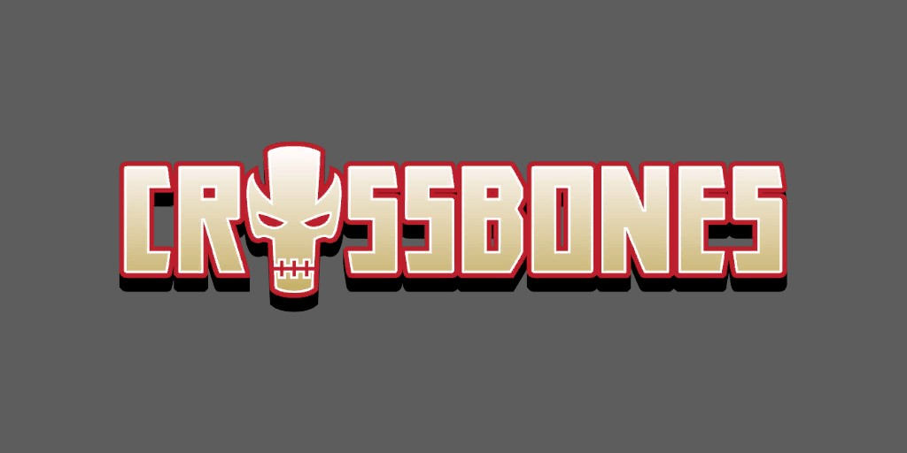
Crossbones (Brock Rumlow) (Terre-616)
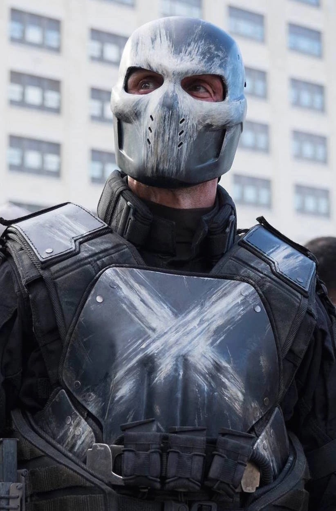
Origines :
Le jeune Brock Rumlow dirigeait le gang des Savage Crims dans le Lower East Side de New-York.
Après avoir violé Rachel Leghton, quinze ans, deux de ses frères ont agressé Brock et il les a tués.
Rumlow s'est enfui et est entré à l'école pour criminels du Taskmaster, où il est devenu instructeur trois ans plus tard sous le nom de Bingo Brock.
Mercenaire, il s'engagea auprès du Crâne Rouge communiste (Albert Malik) en Algérie, servant sous le nom de « Frag » jusqu'à ce qu'il soit envoyé envahir le château suisse d'Arnim Zola.
Seul membre de son équipe à survivre à l'assaut, Rumlow rencontra et impressionna le véritable Crâne Rouge (Johann Schmidt), qui accepta les services de Brock sous le nom de code « Crossbones ».
Lorsque Crâne Rouge tenta de réactiver le Cube Cosmique, il fut assassiné par le Soldat de l'Hiver d' Aleksander Lukin, qui vola le Cube.
Lukin fit accuser anonymement Captain America de la mort du Crâne, mais Crossbones comprit la vérité et se lança à sa poursuite.
Il poursuivit les plans du Crâne, dirigeant un branche de l'AIM, et enleva et endoctrina Sin, la fille de Crâne Rouge.
Il sera finalement prouvé que Crâne Rouge avait utilisé le Cube Cosmique en mourant, transférant son esprit dans le corps de Lukin, et il recruta Crossbones et Sin à son service.
A la fin de la Civil War, Crâne Rouge a orchestré l'assassinat de son ennemi juré, Captain America.
Le plan prévoyait que Sharon Carter, une agent du SHIELD et proche du Captain, subisse un lavage de cerveau de la part du Docteur Faustus pour lui tirer dessus à bout portant.
A cela s'ajoutaient les tirs d'un sniper, Crossbones, qui fut rapidement appréhendé par Bucky et Sam Wilson.
Pendant sa détention, il est torturé par Wolverine et Daredevil, puis scanné par le Professeur Xavier à la recherche d'informations sur son commanditaire.
Xavier découvre alors que la mémoire de Crossbones a été partiellement effacée pour éviter ce genre d'interrogatoire.
Quelques temps plus tard, il est libéré de sa prison par Sin, à la tête de la Serpent Society.
Ils affrontent Bucky et Black Widow.
Dans l'affrontement, Crossbones est blessé par balles et arrêté de nouveau.
Incarcéré au Raft désormais dirigé par US Agent et Luke Cage, on proposa à Crossbones une place dans la nouvelle équipe des Thunderbolts.
Lors de sa première mission, il est exposé aux vapeurs des cristaux terragènes et développe une mutation (son visage génère un halo de flammes).
Il tente de s'échapper, mais est arrêté par Luke Cage, et remis derrière les barreaux.
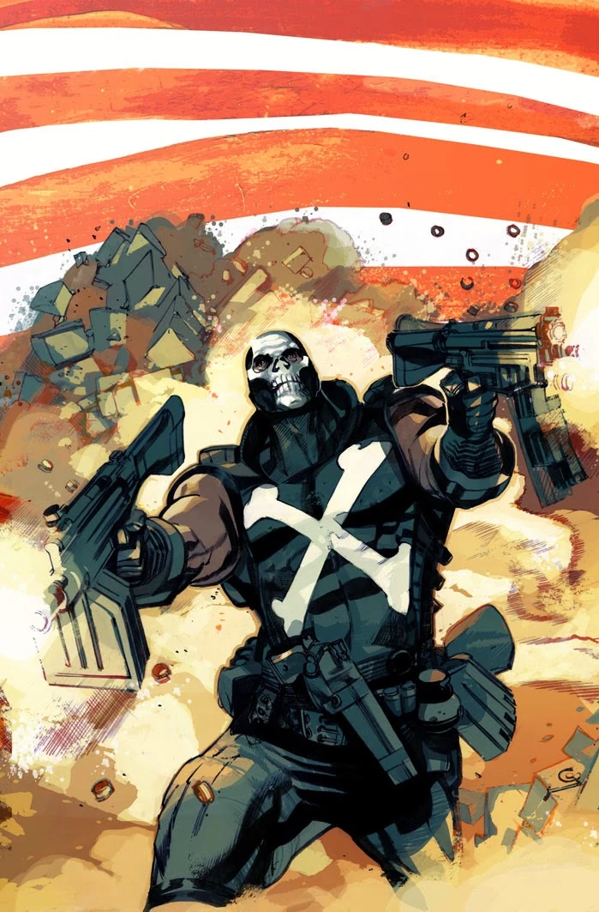
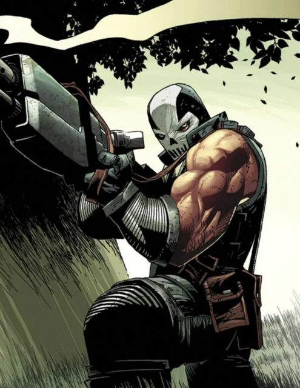
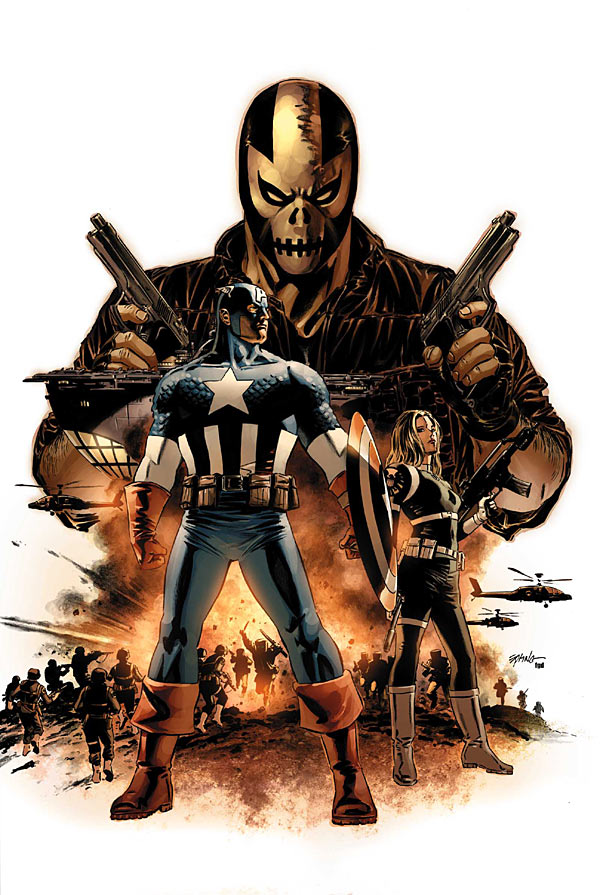
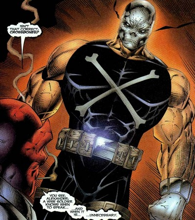
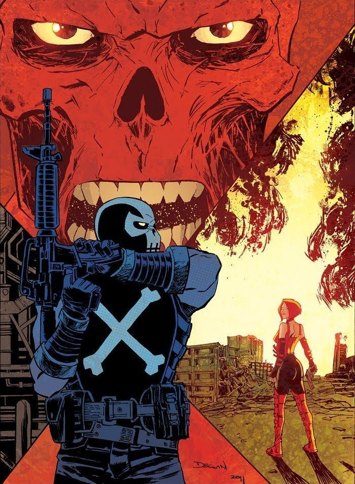
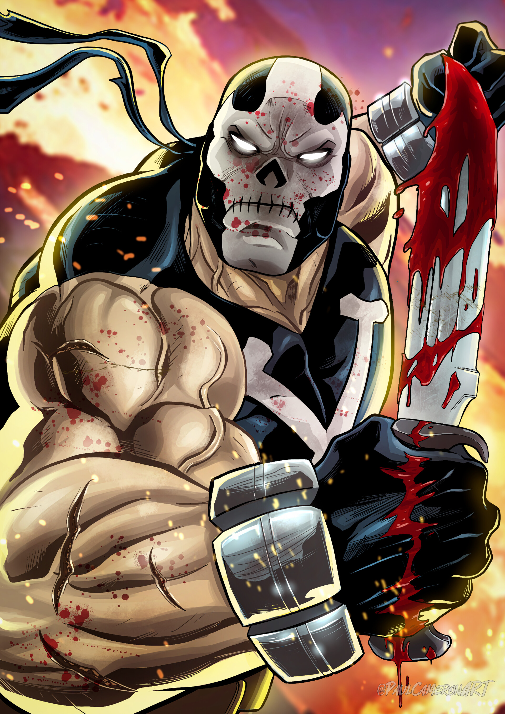
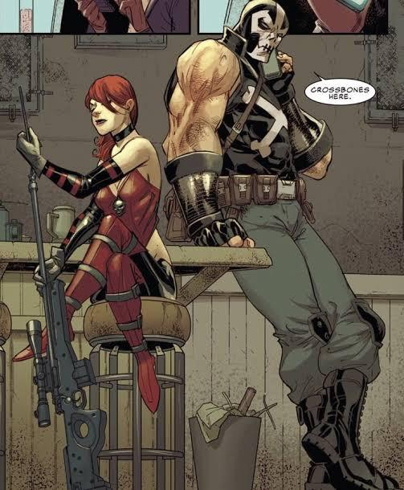
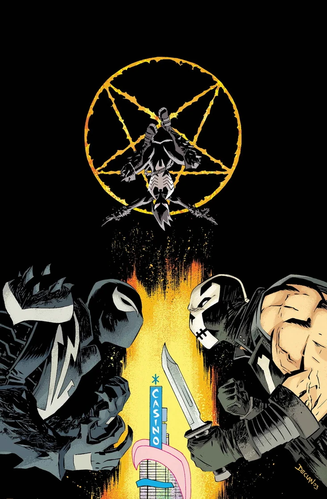
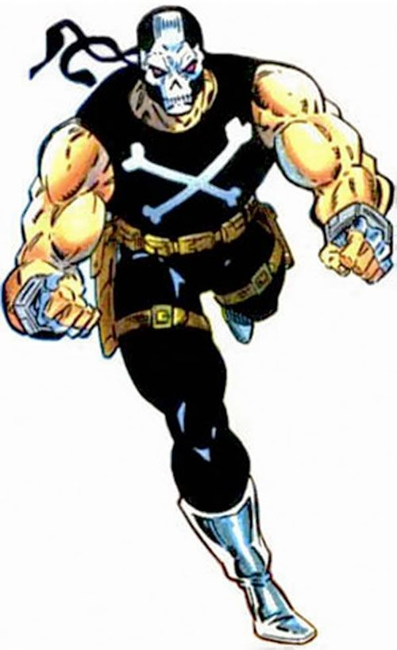
Capacités :
Crossbones n'a pas de super-pouvoirs, mais possède des capacités physiques extrêmes.
Combattant au corps-à-corps expérimenté, il apprécie tout autant les arts martiaux que les combats de rue.
C'est également un expert dans le maniement d'armes blanches, comme des couteaux de combat, des dagues de jet ou encore le stylet.
Il manie également les armes à feu et est un tireur expérimenté.

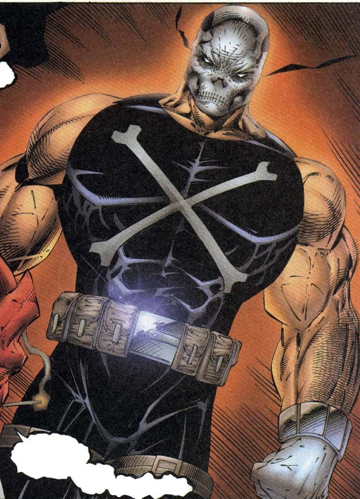
Apparence :
Crossbones a une apparence très marquée et intimidante.
Il porte presque toujours une cagoule noire couvrant tout son visage, avec un tête de mort blanche stylisée peinte dessus.
Il est grand et large d'épaules, extrêmement musclé.
Il est souvent vêtu d'un uniforme noir ou sombre, dans un style commando : gilet pare-balles, ceintures utilitaires, gants renforcés et bottes de combat.
En plus de son masque, on retrouve souvent des motifs de croix blanches sur son costume, parfois en collier ou peintes sur son équipement.
Équipes affiliées

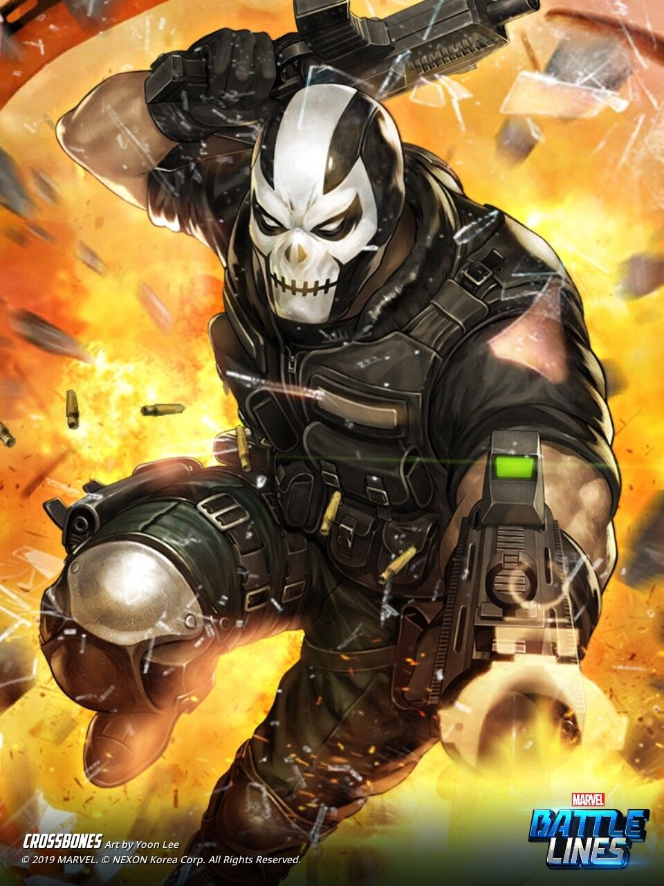
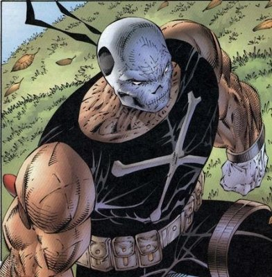
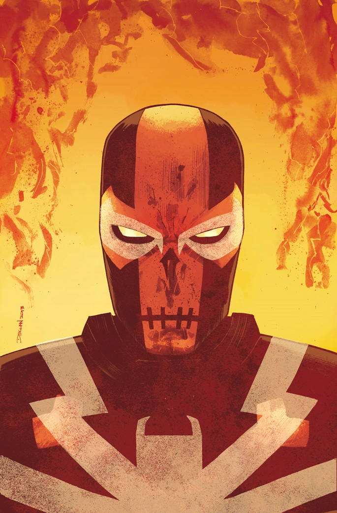
.jpg)